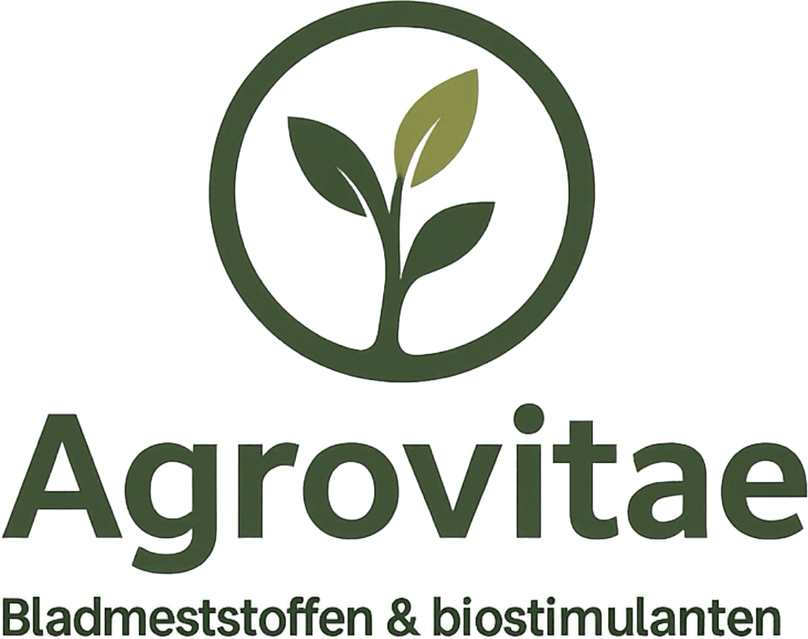
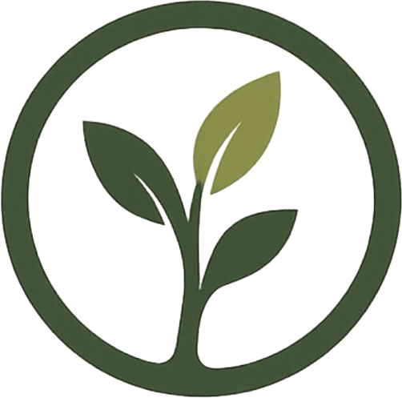

Voorkant · 85 × 55 mm · 3 mm afloop

www.agrovitae.eu
Achterkant

Marco van Beusichem
Bladmeststoffen & biostimulanten
+31 6 54950432
info@agrovitae.eu
Hoofdstraat 49, 4041 AB Kesteren
www.agrovitae.eu
KVK 88547392
Nederland